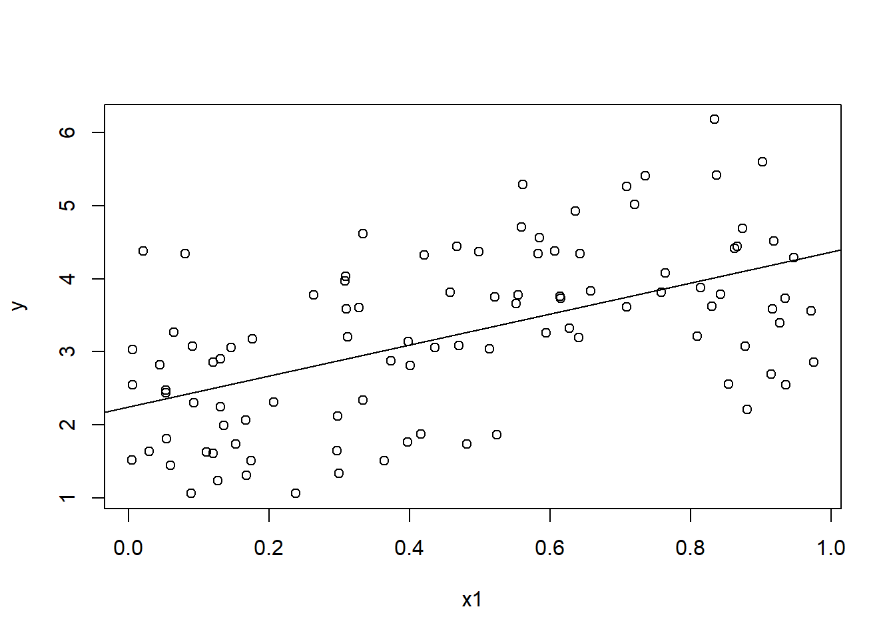

X <- as.matrix(dfX)
X <- cbind(1, X)
y <- as.matrix(dfY)
beta <- solve(t(X) %*% X) %*% t(X) %*% y9 MLR
\[ \require{physics} \require{braket} \]
\[ \newcommand{\dl}[1]{{\hspace{#1mu}\mathrm d}} \newcommand{\me}{{\mathrm e}} \]
\[ \newcommand{\Exp}{\operatorname{E}} \newcommand{\Var}{\operatorname{Var}} \newcommand{\Mode}{\operatorname{mode}} \]
\[ \newcommand{\pdfbinom}{{\tt binom}} \newcommand{\pdfbeta}{{\tt beta}} \newcommand{\pdfpois}{{\tt poisson}} \newcommand{\pdfgamma}{{\tt gamma}} \newcommand{\pdfnormal}{{\tt norm}} \newcommand{\pdfexp}{{\tt expon}} \]
\[ \newcommand{\distbinom}{\operatorname{B}} \newcommand{\distbeta}{\operatorname{Beta}} \newcommand{\distgamma}{\operatorname{Gamma}} \newcommand{\distexp}{\operatorname{Exp}} \newcommand{\distpois}{\operatorname{Poisson}} \newcommand{\distnormal}{\operatorname{\mathcal N}} \]
9.1 General form
Definition 9.1 \[ y=\beta_0+\beta_1x_1+\beta_2x_2+\ldots+\beta_kx_k+\epsilon \] where
- \(y\) is the dependent variable (response variable)
- \(x_1,\ldots,x_k\) are the independent variable
- \(E(y)=\beta_0+\beta_1x_1+\beta_2x_2+\ldots+\beta_kx_k\) is the deterministic portion of the model
- \(\beta_i\) determines the contribution of the independent variable \(x_i\)
Note
Note that there might be relations among \(x_i\)’s.
- If \(x_2=x_1^2\), \(x_2\) is called a higher-order term.
- If \(x_3=1\) in some cases and \(0\) in some other cases, \(x_3\) is called a coded variable. This is an example of categorical variables in regression.
The steps are very similar to simple linear regression.
- Collect data.
- Hypothesize the form of the model.
- Estimate the unknown parameters \(\beta_0,\ldots,\beta_k\).
- Specify the distribution of \(\epsilon\) and estimate its \(\sigma^2\).
- Evaluate the utility of the model, like checking p-values and \(R^2\).
- Verify the model by checking the assumptions on \(\epsilon\).
- Use the model. Analyze the prediction and make inferences.
NoteAssumptions about \(\epsilon\)
- For any given \(x_i\), \(\epsilon\sim \distnormal(0,\sigma^2)\).
- The random errors are independent.
9.2 A first-order model with quantitative predictors
Definition 9.2 (A First-Order Model in \(k\) Quantitative Independent Variables) \[ E(y)=\beta_0+\beta_1x_1+\beta_2x_2+\ldots+\beta_kx_k \] where \(x_1,\ldots,x_k\) are \(k\) quantitative independent variables.
After inputing the data, we have the following equations.
\[ y_i=\beta_0+\beta_1x_{i1}+\beta_2x_{i2}+\ldots+\beta_kx_{ik}+\epsilon_i,\quad i=1,\ldots,n. \]
Write them in term of matrices:
\[ \mathbf{y}=\mqty[y_1\\\ldots\\y_n],\quad \mathbf{X}=\mqty[1&x_{11}&x_{12}&\ldots&x_{1k}\\\ldots&&&&\\1&x_{n1}&x_{n2}&\ldots&x_{nk}],\quad \boldsymbol{\beta}=\mqty[\beta_0\\\beta_1\\\ldots\\\beta_k],\quad \boldsymbol{\epsilon}=\mqty[\epsilon_1\\\ldots\\\epsilon_n]. \]
Then the model can be expressed as \[ \mathbf{y}=\mathbf{X}\boldsymbol{\beta}+\boldsymbol{\epsilon} \]
The OLS estimator is used to minimize the square sum of residuals \[ (\mathbf y-\mathbf X\boldsymbol{\beta})^T(\mathbf y-\mathbf X\boldsymbol{\beta}). \]
Therefore \[ \boldsymbol{\hat{\beta}}=\argmin_{\beta}(\mathbf y-\mathbf X\boldsymbol{\beta})^T(\mathbf y-\mathbf X\boldsymbol{\beta}). \]
Theorem 9.1 (The OLS estimator) The following estimator is an unbiased estimator of \(\boldsymbol{\beta}\): \[ \boldsymbol{\hat{\beta}}=\mathbf{(X^T X)^{-1}X^T y} \] In addition, \[ \Var(\boldsymbol{\hat{\beta}})=\mathbf{(X^T X)}^{-1}\sigma^2. \]
NoteSLR case
When \(k=1\), we have
\[ \mathbf X=\mqty[1&1&\ldots&1\\x_1&x_2&\ldots&x_n],\quad \mathbf y=\mqty[y_1\\\ldots\\y_n]. \] Then
\[ \begin{split} \mathbf{X^T X}&=\mqty[1&1&\ldots&1\\x_1&x_2&\ldots&x_n]\mqty[1&x_1\\1&x_2\\\ldots&\\1&x_n]=\mqty[n&n\bar{x}\\n\bar x&\sum x_i^2],\\ \mathbf{X^T y}&=\mqty[1&1&\ldots&1\\x_1&x_2&\ldots&x_n]\mqty[y_1\\\ldots\\y_n]=\mqty[n\bar y\\\sum x_iy_i],\\ \mathbf{(X^T X)^{-1}X^T y}&=\mqty[n&n\bar{x}\\n\bar x&\sum x_i^2]^{-1}\mqty[n\bar y\\\sum x_iy_i]\\ &=\frac{1}{n(\sum x_i^2)-n^2\bar x^2}\mqty[\sum x_i^2&-n\bar x\\-n\bar x&n]\mqty[n\bar y\\\sum x_iy_i]\\ &=\frac{1}{n(\sum x_i^2)-n^2\bar x^2}\mqty[n(\sum x_i^2)\bar y-n\bar x(\sum x_iy_i)\\n(\sum x_iy_i)-n^2\bar x\bar y]\\ &=\frac{1}{(\sum x_i^2)-n\bar x^2}\mqty[(\sum x_i^2)\bar y-\bar x(\sum x_iy_i)\\(\sum x_iy_i)-n\bar x\bar y]\\ &=\frac{1}{\sum x_i^2-n\bar x^2}\mqty[(\sum x_i^2-n\bar x^2)\bar y+n\bar x^2\bar y-\bar x(\sum x_iy_i)\\\sum x_iy_i-n\bar x\bar y]\\ &=\frac{1}{\sum x_i^2-n\bar x^2}\mqty[(\sum x_i^2-n\bar x^2)\bar y-\bar x(\sum x_iy_i-n\bar x\bar y)\\\sum x_iy_i-n\bar x\bar y]. \end{split} \]
Note that
\[ \begin{split} S_{xx}&=\sum (x_i-\bar x)^2=\sum(x_i^2-2x_i\bar x+\bar x^2)=\sum x_i^2-2(\sum x_i)\bar x+n\bar x^2=\sum x_i^2-n\bar x^2,\\ % S_{yy}&=\sum (y_i-\bar y)^2=\sum(y_i^2-2y_i\bar y+\bar y^2)=\sum y_i^2-2(\sum y_i)\bar y+n\bar y^2=\sum y_i^2-n\bar y^2,\\ S_{xy}&=\sum (x_i-\bar x)(y_i-\bar y)=\sum(x_iy_i-x_i\bar y-y_i\bar x+\bar x\bar y)\\ &=\sum x_iy_i-(\sum x_i)\bar y-(\sum y_i)\bar x+n\bar x\bar y=\sum x_iy_i-n\bar x\bar y, \end{split} \]
We have
\[ \begin{split} \mathbf{(X^T X)^{-1}X^T y}&=\frac{1}{\sum x_i^2-n\bar x^2}\mqty[(\sum x_i^2-n\bar x^2)\bar y-\bar x(\sum x_iy_i-n\bar x\bar y)\\\sum x_iy_i-n\bar x\bar y]\\ &=\frac{1}{S_{xx}}\mqty[S_{xx}(\bar y-\bar x(S_{xy}))\\S_{xy}]=\mqty[\bar y-\bar x(S_{xy}/S_{xx})\\S_{xy}/S_{xx}]. \end{split} \]
Therefore in the case of \(k=1\), \(\hat{\beta}_1=S_{xy}/S_{xx}\) and \(\hat{\beta}_0=\bar y-\beta_1\bar x\).
In addition, the variance of \(\hat{\beta_1}\) is the (2,2)-entry of the variance-covariance matrix \(\hat{\boldsymbol{\beta}}\). Since
\[ \begin{split} \Var(\boldsymbol{\hat{\beta}})=\mathbf{(X^T X)}^{-1}\sigma^2=\frac{1}{n(\sum x_i^2)-n^2\bar x^2}\mqty[\sum x_i^2&-n\bar x\\-n\bar x&n]\sigma^2, \end{split} \] the (2,2)-entry is \[ \begin{split} \Var(\hat{\beta_1})&=\frac{n}{n(\sum x_i^2-n\bar x^2)}\sigma^2=\frac{\sigma^2}{S_{xx}}. \end{split} \]
Caution
In MLR, the multicolinearity between independent variables doesn’t affect the unbiasedness of the OLS estimators. In other words, even if those independent variable are colinear, the OLS estimators is still BLUE (Best Linear Unbiased Estimators) to estimate \(\boldsymbol{\hat{\beta}}\) as long as other standard assumptions hold. However, the variance and the stability may be impacted, and this may impact the later inference.
- Multicollinearity inflates the variance of the estimated coefficients.
- Even if a variable is genuinely important, its coefficient might not be statistically significant due to high standard errors.
- The model might struggle to separate the effects of correlated predictors.
9.3 The analysis of variance
- \(SSE=\sum (y_i-\hat{y}_i)^2\).
- \(s^2=MSE=\frac{SSE}{n-(k+1)}\).
Hypothesis test:
Definition 9.3 (The Global \(F\)-Test)
- \(H_0\): all \(\beta_i\)’s are \(0\).
- \(H_a\): at least one \(\beta_i\) is not \(0\).
- \(F=\frac{MSR}{MSE}=\frac{(SST-SSE)/k}{SSE/[n-(k+1)]}\).
- \(p=\Pr(F>F_{\alpha})\).
Note that since \(F\)-statistics is always positive, we only need to compute one tail of it.
Definition 9.4 (The individual \(t\)-Test for variable \(\beta_i\))
- \(H_0\): \(\beta_i=0\).
- \(H_a\): \(\beta_i\neq 0\).
- \(t=\frac{\hat{\beta}_i}{s_{\hat{\beta}_i}}\).
- \(p=\Pr(\abs{t}>t_{\alpha})\).
Note that these \(\hat{\beta}_i\) and \(s_{\hat{\beta}_i}\) directly come from the OLS estimators.
Caution
- You have to pass F-test to proceed. If not, stop and modify the model.
- Try to minimize the number of t-tests. Too many t-tests leads to a high overall Type I error rate.
- When a parameter is not significant, there are some possibilities:
- \(y\) and \(x_i\) don’t have relations.
- They have a linear relation, but Type II error occurred.
- They have non-linear relations.
Example 9.1 (a simple R code example) In base R, we need the following command to perform manual operations:
as.matrixto convert adata.frameinto amatrix.%*%is for matrix multiplication.tis the transpose of a matrix.solveis used to compute the inverse of a matrix.cbindis to combine two matrices horizontally. (rbindis to combine matrices vertically, but we don’t need it here.)
Then once you have two dataframes dfX and dfY, the following code can be used to compute the OLS estimators.
To compute the variance, we should first estimate \(\sigma^2\).
yhat <- X %*% beta
SSE <- sum((y-yhat)^2)
n <- dim(X)[1]
k <- dim(X)[2] - 1
s2 <- SSE/(n-(k+1))
var_beta <- s2 * solve(t(X) %*% X)We could use diag to extract the diagonal to get variance and ignore all the covariance terms. Then apply sqrt to get the standard errors.
se_beta <- sqrt(diag(var_beta))From here, we could compute the corresponding \(t\)-tests and \(F\)-test, by the formula \(t=\frac{\hat{\beta}}{s_{\hat{\beta}}}\) and \(F=\frac{MSR}{MSE}\).
t <- beta / se_beta
MSR <- sum((y_hat-mean(y))^2) / k
MSE <- s2
F <- MSR/MSEAfter we get the statistics, we could conduct the corresponding test by checking the p-values.
p_t <- pt(abs(t), n-(k+1), lower.tail = FALSE) + pt(-abs(t), n-(k+1))
p_f <- pf(F, k, n-(k+1), lower.tail = FALSE)9.4 Evluation
9.4.1 \(R^2\)
Definition 9.5 (The multiple coefficient of determination) \[ R^2=1-\frac{SSE}{SST}. \] \(R^2\) represents the fraction of the sample variation that is explained by the model.
9.4.2 \(R_a^2\)
\(R^2\) is a “hard” measurement for the model performance. However since adding more predictors always increases \(R^2\) even if they are useless, we need a way to adjust for the number of predictors. This is the adjusted \(R^2\).
Definition 9.6 (The adjusted multiple coefficient of determination) \[ R^2_a=1-\qty[\frac{(n-1)}{n-(k+1)}]\qty(\frac{SSE}{SST})=1-\qty[\frac{(n-1)}{n-(k+1)}]\qty(1-R^2). \]
Note
- \(R_a^2\leq R^2\).
- For poor-fitting models \(R_a^2\) can be negative.
- The practical interpretation for \(R_a^2\) is the fraction of the variance explained by the model adjusted for the sample size and the number of parameters.
9.5 Analysis of predictions
- C.I.
- P.I.
code are the same
Warning
Exteprelation is dangerous.
9.6 Interaction and confounding
- lm(y~x+z+x:z)
- lm(y~x:z)
- x2 <- x*x, lm(y~x+x2)
- lm(y~x+I(x^2))
- lm(y~poly(x,2,raw=True))
9.7 Dummy variables
R use factors to regonze processable categorical data.
lm function will automatically cast processiable categorical data into dummy variables.
CARGO has durable, fragile and semifrag
if the variable is not numeric, it will be changed into categorical regression with dummy variables directly.
cargo$CARGO as.factor(cargo$CARGO)
contrasts(cargo$CARGO)contrasts is to show how dummy variables are set
if we are changing the base level:
cargo$CARGO = relevel(cargo$CARGO, ref="Fragile")
contrasts(cargo$CARGO)fit <- lm(COST~CARGO, data=cargo)
summary(fit)9.8 A test for comparing nested models
Definition 9.7 (Nested models) Two models are nested if one model contains all the terms of the second model and at least one additional term.
- The more complex model is called the complete (or full) model.
- The simpler model is called the reduced (or restricted) model.
Here the main question is whether the additional terms are really necessary. We use a Hypothesis test to answer the question.
NoteF-Test for comparing nested models
- Reduced model: \(E(y)=\beta_0+\beta_1x_1+\ldots+\beta_g x_g\)
- Complete model: \(E(y)=\beta_0+\beta_1x_1+\ldots+\beta_g x_g+\beta_{g+1}x_{g+1}+\ldots+\beta_{k}x_k\)
- \(H_0: \beta_{g+1}=\ldots=\beta_k=0\).
- \(H_a\): at least one of the \(\beta_{g+1},\ldots,\beta_k\) is nonzero.
- \(\displaystyle F=\frac{(SSE_R-SSE_C)/(k-g)}{SSE_C/[n-(k+1)]}\).
We could use the above formula to manually perform the test.
or we could use R code anova(fit.reduced, fit.full)
9.9 Dummy variable: qualitative variables
9.10 Collinearity in Multiple Linear Regression
- First issue about collinearity is that \(\mathbf{X^T X}\) would be singular, or at least close to singular, that its inverse doesn’t exist or the computation is very unstable.
- The covariance matrix \(\mathbf{(X^T X)}^{-1}\sigma^2\) will be extremely large, which means that the variance will be very large.
Definition 9.8 (The variance inflation factor) The variance inflation factor for the ith coefficient is \[ VIF_i=\frac{1}{1-R^2_i} \] where \(R_i^2\) is the \(R^2\) of regression produced by regressing \(x_i\) against other \(x_j\)’s. If one variable is colinear to other variables, its VIF is supposed to be \(\infty\). If not, its VIF is supposed to be \(1\).
Usually if VIF is more than 5 or 10, multicollinearity may be a problem.

9.11 R code
How to use lm function.
x1 <- runif(100)
x2 <- runif(100)
eps <- rnorm(100, 0, 0.5)
y <- 1+2*x1+3*x2+eps
model <- lm(y~x1+x2)- Model coefficients
model$coefficients
## (Intercept) x1 x2
## 1.102617 2.066415 2.792122
model$coefficients['(Intercept)']
## (Intercept)
## 1.102617
model$coefficients['x1']
## x1
## 2.066415
model$coefficients['x2']
## x2
## 2.792122When using SLR, we could directly read the coefficients and plot lines.
plot(x1, y)
abline(lm(y~x1)$coefficients)
- Some computed values
We could directly find the residuals and the fitted values.
model$residuals
model$fitted.values- Model properties The standard error, \(R^2\), \(R_a^2\), and \(F\)-statistic can be gotten from here.
summary(model)$sigma
## [1] 0.5230084
summary(model)$r.squared
## [1] 0.7724122
summary(model)$adj.r.squared
## [1] 0.7677197
summary(model)$fstatistic
## value numdf dendf
## 164.6046 2.0000 97.0000The individual Std. error and t value and p value can also be read directly.
summary(model)$coefficients
## Estimate Std. Error t value Pr(>|t|)
## (Intercept) 1.102617 0.1699613 6.487460 3.684887e-09
## x1 2.066415 0.2321884 8.899734 3.179516e-14
## x2 2.792122 0.1673629 16.683043 2.955100e-30
summary(model)$coefficients['x2', 't value']
## [1] 16.68304- Why Does summary(lm()) Show t-tests Instead of F-tests? Regression focus:
summary(lm()) emphasizes coefficient estimates (slopes), so t-tests are more intuitive.
It answers: “Is this specific predictor’s slope ≠ 0?”
ANOVA focus:
anova(lm()) emphasizes variance explained by each term.
It answers: “Does this predictor (or model) explain significant variance?”
- Key Takeaways For simple regression (1 predictor):
The t-test (from summary) and F-test (from anova) are identical.
For multiple predictors:
t-tests assess individual slopes (adjusting for other predictors).
F-tests assess groups of predictors (e.g., all levels of a categorical variable).
ANOVA is a generalization:
t-tests are a special case of ANOVA when testing a single predictor.